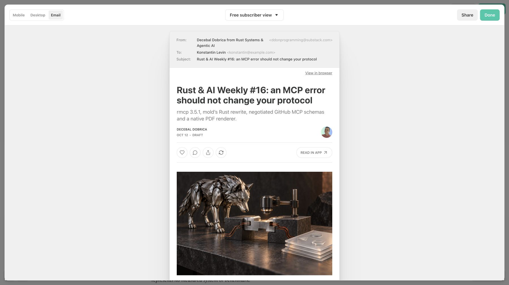

Issue 16 has a saved, readable newsletter draft
A reviewer can read the complete October 12 edition in Substack, with uploaded artwork and radar, and inspect the matching article and social sources.
Issue 15 precedes one unpublished issue 16
Before: origin/main at cee723c contains issue 15. After: docs/rust-ai-weekly-16 contains one dated issue 16 and its review assets. The final commit SHA is supplied by the PR; this report cannot embed its own enclosing commit hash.
The authenticated email preview shows the saved draft

Read the draft and compare its saved text
- Open draft 219995423, then Preview → Email. Pass: issue 16 title, both images, paragraph gaps and closing question appear.
- Read saved-copy comparison. Pass: sameTextIgnoringBlockWhitespace is true and missingLinks is empty. Smart quotes and block whitespace were normalized.
- Read render metrics. Pass: 90 tools, 15/36/37/2 verdict totals; no paragraph over 100 words; seven X posts within 280 weighted characters.
Preview success does not establish deployment or delivery
The new canonical blog URL and image paths need deployment. The standard HTML uses those paths; the saved Substack HTML uses uploaded CDN images. Initial paid-only audience was changed to Everyone and verified after reload. Published posts were not edited.
Visible paragraph spacing and uploaded assets need a real editor
The Substack preview demonstrates that HTML paste retained content, links and both images. Static counts alone cannot establish the editor's rendered appearance.
What I have not checked
No delivered-mailbox test, production deployment, independent tool interoperability, linker benchmark or PDF rendering trial. No newsletter or social publication is authorized by this Git approval. Local Next.js route verification is recorded in the ledger; its development screenshot is excluded from this report's production evidence.